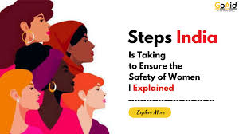

Safety Precautions for Women
1.Stay Aware of Surroundings: Always be mindful of where you are and who’s nearby. 2.Trust Your Instincts: If something feels wrong, remove yourself from the situation. 3.Plan Safe Routes: Opt for well-lit, populated areas and avoid secluded spots. 4.Keep in Touch: Inform someone of your location when going out alone. 5.Carry Safety Tools: Items like pepper spray can offer extra protection. 6.Learn Self-Defense: Basic self-defense skills can be lifesaving.
Action
1.Self-Defense Training: Consider enrolling in self-defense classes to learn physical techniques and improve confidence. Krav Maga, Brazilian Jiu-Jitsu, and other martial arts can be effective.
2.Situational Awareness: Stay aware of your surroundings and trust your instincts. Avoid distractions like looking at your phone when in public.
3.Personal Safety Tools: Carry self-defense tools such as pepper spray, a personal alarm, or a whistle. Make sure you know how to use them effectively.
4.Safe Practices: Avoid walking alone in poorly lit or unfamiliar areas. Use well-traveled routes and inform someone you trust about your whereabouts.
5.Secure Your Home: Ensure that doors and windows are locked. Consider adding security systems or cameras if feasible.
6.Develop a Safety Plan: Have a plan for various scenarios, including what to do if you feel threatened or if an attack occurs. Practice these scenarios to be better prepared.
7.Self-Defense Apps: Consider using personal safety apps that allow you to quickly alert friends or authorities if you feel unsafe.
8.Assertiveness: Practice being assertive and clear in your communication. Setting boundaries can often deter potential threats.
Cure
1.Self-Defense Training: Consider enrolling in self-defense classes to learn physical techniques and improve confidence. Krav Maga, Brazilian Jiu-Jitsu, and other martial arts can be effective.
Situational Awareness: Stay aware of your surroundings and trust your instincts. Avoid distractions like looking at your phone when in public.
2.Personal Safety Tools: Carry self-defense tools such as pepper spray, a personal alarm, or a whistle. Make sure you know how to use them effectively.
Safe Practices: Avoid walking alone in poorly lit or unfamiliar areas. Use well-traveled routes and inform someone you trust about your whereabouts.
3.Secure Your Home: Ensure that doors and windows are locked. Consider adding security systems or cameras if feasible.
Develop a Safety Plan: Have a plan for various scenarios, including what to do if you feel threatened or if an attack occurs. Practice these scenarios to be better prepared.
4.Self-Defense Apps: Consider using personal safety apps that allow you to quickly alert friends or authorities if you feel unsafe.
5.Assertiveness: Practice being assertive and clear in your communication. Setting boundaries can often deter potential threats.